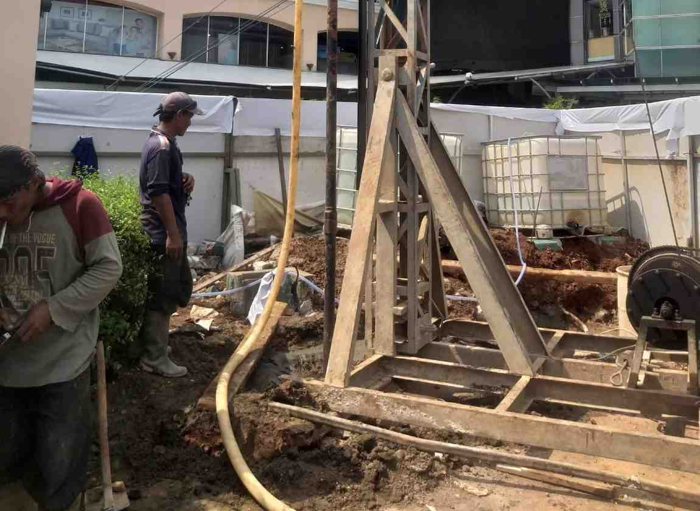

3 Tahapan Proses Jasa Borepile
Pahami setiap tahapan pembuatan pondasi borepile & strausspile dari awal hingga akhir
Proses Lengkap Jasa Borepile
Kami menyediakan layanan borepile dengan 3 tahapan utama yaitu pengeboran, perakitan besi struktur tulangan, dan pengecoran beton
Pengeboran
Persiapan Lubang Pondasi

Pengeboran adalah tahap pertama dan paling penting dalam proses pembuatan pondasi borepile. Kami menggunakan mini crane untuk membuat lubang dengan kedalaman dan diameter sesuai desain yang diminta oleh teknisi, dan menggunakan tenaga manusia dalam pengeboran manual atau strauss pile.
Spesifikasi Pengeboran:
- Kedalaman PresisiHingga 30 meter dengan akurasi tinggi
- Diameter Bervariasi30cm hingga 150cm sesuai kebutuhan
- Minim GetaranAman untuk bangunan di sekitarnya
Estimasi Waktu:
Pemasangan Besi
Pembuatan Struktur Tulangan

Tulangan besi dirakit dalam bentuk spiral yang kemudian dipasang ke dalam lubang borepiledengan hati-hati sesuai rancangan teknisi untuk memastikan distribusi beban yang optimal.
Spesifikasi Pemasangan Besi:
- Besi Standar SNIU32, U39, atau sesuai permintaan
- Pemasangan PresisiSesuai desain untuk kekuatan yang maksimal
- Pengecekan kondisiPengecekan semua pengerjaan perakitan sebelum pengecoran beton
Estimasi Waktu:
Penuangan Beton
Pengisian & Pengerasan Pondasi

Beton berkualitas tinggi dengan mutu sesuai spesifikasi dituangkan untuk mengisi seluruh lubang dan membungkus tulangan besi, menciptakan pondasi dalam yang kokoh.
Spesifikasi Penuangan Beton:
- Beton BerkualitasMutu K250 - K300 atau sesuai permintaan
- Kontrol KualitasSlump test dan kuat tekan
- Curing ProcessPerawatan beton 28 hari
Estimasi Waktu:
Ringkasan Proses Keseluruhan
Pilih Layanan Sesuai Kebutuhan
Perbandingan detail antara Borepile dan Strauss Pile
Borepile
Untuk Proyek Sedang - Besar
- Kedalaman:Hingga 30m
- Diameter:30-150cm
- Kapasitas:50-200 ton
- Waktu:2-4 titik/hari
- Harga:Rp120.000-350.000/m
Strauss Pile
Untuk Proyek Kecil - Sedang
- Kedalaman:Hingga 10m
- Diameter:20-40cm
- Kapasitas:10-30 ton
- Waktu:1-3 titik/hari
- Harga:Rp70.000-100.000/m
Pertanyaan yang Sering Diajukan
Jawaban cepat untuk pertanyaan umum terkait proses borepile
Berapa lama waktu yang dibutuhkan untuk menyelesaikan setiap tahapan?
Pengeboran, pemasangan tulangan, dan pengecoran biasanya 2-4 titik perhari bore pile mesin, dan 1-3 titik perhari untuk manual. Total per titik biasanya selesai dalam satu hari kerja. Untuk beton perlu waktu curing atau pengerasan selama 28 hari untuk mencapai kekuatan optimal.
Apakah proses borepile akan merusak bangunan di sekitarnya?
Tidak. Kami menggunakan teknik pengeboran yang minim getaran, berbeda dengan tiang pancang yang menghasilkan getaran besar. Jadi proses borepile aman untuk bangunan di sekitarnya.
Jenis dan kualitas besi tulangan apa yang dipakai?
Biasanya teknisi menggunakan besi tulangan standar SNI, umumnya U32 atau U39, dengan ukuran sesuai desain struktur. Semua material dipilih untuk memastikan kekuatan dan ketahanan pondasi, kebanyakan client juga hanya menggunakan jasa bore pile saja dengan memakai material sendiri.
Bagaimana kalian menjamin kualitas di setiap tahap?
Tim kami adalah orang berpengalaman yang sudah ahli dibidang bore pile dan strauss pile sehingga kualitas pengerjaan selalu terjaga.
Apakah pekerjaan ini memiliki garansi?
Ya, kami memberikan garansi untuk pekerjaan pondasi sesuai ketentuan. Jika ada masalah yang disebabkan oleh pelaksanaan kami, tim kami siap ganti rugi dan memperbaiki tanpa biaya tambahan. Jika ada kendala diluar kami, maka itu adalah tanggung jawab pribadi.
Siap Membangun Bangunan Anda?
Hubungi kami untuk konsultasi gratis dan dapatkan penawaran terbaik untuk proyek pondasi Anda